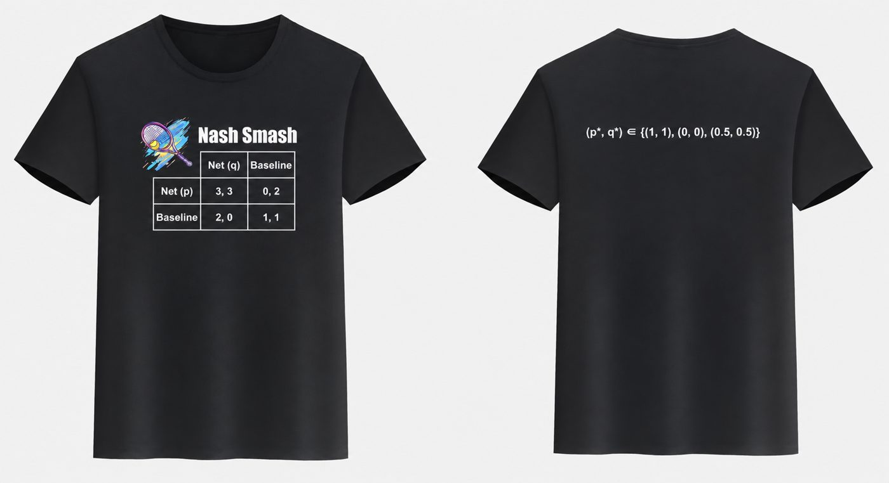

Ph.D. Candidate in Business and Economics · Lehigh University
Not everything I do comes with a standard error.
Tennis has a small but serious literature. Walker and Wooders (2001, American Economic Review) used serves in Wimbledon finals to test whether professional players mix their serve directions the way game theory predicts, and found that they come close. On the health side, a long-running study of Copenhagen residents found that people who played tennis lived about 9.7 years longer than people who were sedentary (Schnohr et al., 2018, Mayo Clinic Proceedings). That study is observational, so as a health economist I will not call the effect causal. I play anyway.
Since August 2025 I have played USTA league tennis on Nash Smash, a team organized by Professor Shin-Yi Chou at Lehigh. We play in the 6.0 mixed doubles and 6.0 men's doubles leagues. Our jersey keeps the game theory going: the front prints a game between two doubles partners, and the back prints its solution (Figure 1).

Each partner chooses whether to come to the net or stay at the baseline. Both at the net is the best outcome, both staying back is safe, and the trouble comes when only one of you goes in. That gives two pure equilibria and a mixed one in which each partner goes in half the time. Good partners, we hope, coordinate on (1, 1).
I play piano, violin, guitar, and trumpet.